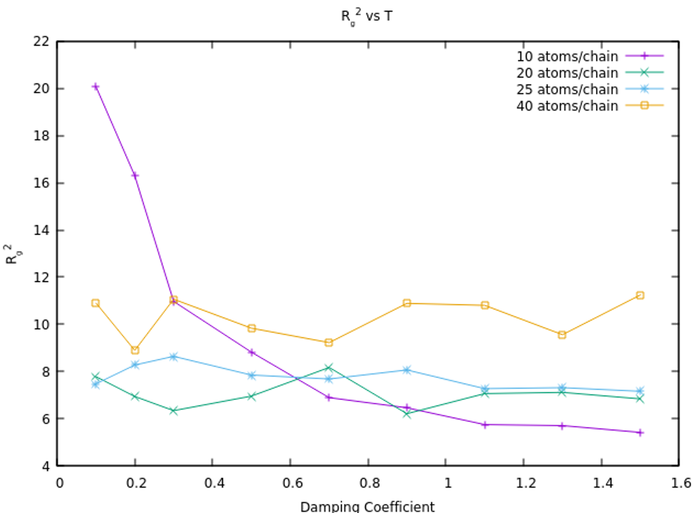

Joydeep Das
HPC & Physics Researcher | Plasma Simulations | Machine Learning
Let's connect on HPC, simulations, and research. Contact me for any queries.
Email - joydeep.das39@gmail.com
Polymers are collections of monomers, each of which is composed of atoms and molecules. Polymers in solvents exhibit complex properties, one of which behaves like a 'model chain', such as how a real gas can behave like an ideal gas under certain conditions This model chain behavior of polymer solutions in this can explore interesting properties such as solubility in polymer-solvent systems The use of simulations of kinematics.
The project aims to simulate a coarse-grained linear polymer model in an implicit solvent to analyze the behavior of the mean-squared radius of gyration, Rg2, under varying conditions of temperature and viscous forces. By systematically adjusting these parameters, the simulation seeks to identify the polymer system's θ-point. The approach leverages the fact that in a coarse-grained polymer model with N beads per chain, plotting Rg2 against temperature or damping coefficient for different N values will yield curves that intersect at the θ-point. This point represents the polymer's critical solubility behavior, providing insight into the thermodynamic properties of polymer solutions in various solvents.
The 𝜃-temperature as can be vaguely observed comes in between 1.0 to 2.0, and the damping coefficient for 𝜃-point is in between 0.6 to 1.0 this values represents as stated earlier a point were in the model of polymer chain so taken would have its attraction and repulsion interactions between all its interaction sites to be negligible, thereby behaving like an ideal chain polymer. The above result can again be utilized in some other fashion. If we assume this simulation model for both the polymer chains and solvent to be a mimic of an actual system with viscous force same as this one and the molar mass of polymer same as this one, then on comparing the Ideal chain Radius of gyration of that system with this simulation model one gets a room for improvement for the polymer model used in this simulation.

The grids do not coincide with flux function due to error accumulated in Eulers’s ,method. Another condition to check that new (R,Z) coordinate remains at same flux function is needed to resolve that. Finally, this grid can be effectively used to work with particle dynamics, as they are much dense other than what obtained from equilibrium solvers.
Let's connect on HPC, simulations, and research. Contact me for any queries.
Email - joydeep.das39@gmail.com